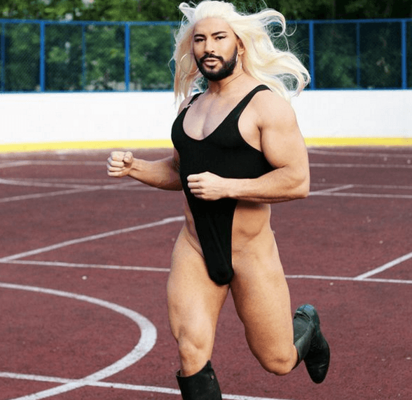

This account syndicates news from other media outlets.


Zander Keig “was an outspoken radical feminist” prior to transitioning into a male and “spoke up often, loudly and with confidence,” the Washington Post reported.
Then Keig made the transition — and life hasn’t always been easy being seen as a male.
“When I speak up now, I am often given the direct or indirect message that I am ‘mansplaining,’ ‘taking up too much space’ or ‘asserting my white male heterosexual privilege,’” Keig, 52, told the paper. “Never mind that I am a first-generation Mexican American, a transsexual man, and married to the same woman I was with prior to my transition.”
Keig — a Coast Guard veteran and now a licensed clinical social worker at Naval Medical Center San Diego — told the Post that workplace suggestions that angry or violent male patients were suffering from trauma or depression were often “dismissed or outright challenged. The overarching theme was ‘men are violent’ and there was ‘no excuse’ for their actions.”
Still, as a transgender male, Keig noted to the paper that the “assertion that I am now unable to speak out on issues I find important” is “offensive and I refuse to allow anyone to silence me.”

More of Keig’s revelations to the Post:
I do notice that some women do expect me to acquiesce or concede to them more now: Let them speak first, let them board the bus first, let them sit down first, and so on. I also notice that in public spaces men are more collegial with me, which they express through verbal and nonverbal messages: head lifting when passing me on the sidewalk and using terms like “brother” and “boss man” to acknowledge me. As a former lesbian feminist, I was put off by the way that some women want to be treated by me, now that I am a man, because it violates a foundational belief I carry, which is that women are fully capable human beings who do not need men to acquiesce or concede to them.
Keig added to the paper there has been a “significant reduction in friendliness and kindness now extended to me in public spaces. It now feels as though I am on my own: No one, outside of family and close friends, is paying any attention to my well-being.”
Then a few years into Keig’s transition came a ride on a bus, the Post noted, during which “this difference hit home.”

Keig said there were six people on the bus, “including me. One was a woman. She was talking on a mobile phone very loudly and remarked that ‘men are such a**holes.’ I immediately looked up at her and then around at the other men. Not one had lifted his head to look at the woman or anyone else.”
Then the woman looked at Keig — and “commented to the person she was speaking with about ‘some a**hole on the bus right now looking at me.’ I was stunned, because I recall being in similar situations, but in the reverse, many times: A man would say or do something deemed obnoxious or offensive, and I would find solidarity with the women around me as we made eye contact, rolled our eyes and maybe even commented out loud on the situation. I’m not sure I understand why the men did not respond, but it made a lasting impression on me.”
Here’s a clip of Keig discussing life as a male — about five years ago — noting that “I love being a man. I love everything about it.”
You can read the complete Washington Post article here, which also profiles two other transgender males.
Don’t Miss: The Myth Of Male Privilege